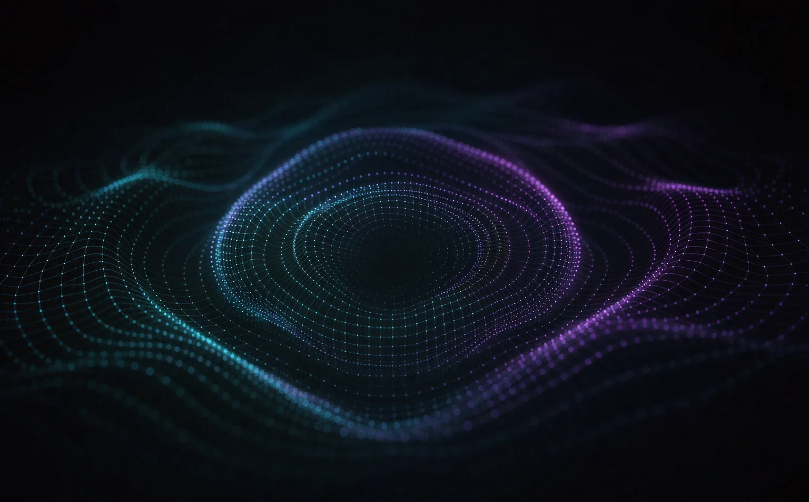

向下滚动
以前的助手，等你下命令。
现在的它，替你走完中间那几步。
能力
不是六个 App，是同一套理解能力。它在你的对话、相册、会议和屏幕之间自由穿行， 因为这一切本来就是同一件事。
模型就在机身里。飞行模式、地铁隧道、山里的民宿，它都在。
离线可用通话、视频、面对面，两边说的话同时变成对方听得懂的语言。
低于 0.5 秒边说边记，谁说了什么分得清。散会时，待办已经按人分好了。
自动待办“去年海边那张穿白衬衫的”——用话找图，不用记时间和地点。
自然语言看到什么就能处理什么：识别、填写、比价、翻译，跨应用一步完成。
跨应用出门前提醒带伞，登机前把登机牌放到锁屏上，不用你问。
主动，但不打扰实时同传
对方说日语，你听到中文；你说中文，对方听到日语。延迟低于半秒， 语速和语气都保留下来，不像机器在念稿。

主动智能
它不会用弹窗打断你。它把该知道的事放在恰当的位置 —— 一天最多出现几次， 每一次都有用。
隐私设计
不是“我们会保护你的数据”，而是“我们拿不到”。语音、照片、对话、屏幕内容， 都在 AURA N1 上处理完，只留下结果。
原始数据需要离开设备
原始数据不出设备
生成能力
不是给你一段草稿让你再改半小时，而是直接给出能用的东西： 周报、摘要、行程单、修好的照片。
实测
选一个场景，看它在你没打字的情况下，把事情推进到什么程度。
能力清单
多人对话区分说话人，嘈杂环境也能听清。
认得物品、文字、表格、票据和手写体。
42 种语言互译，语气和术语都能对齐。
记得你三个月前说过什么，也可以让它忘掉。
在相册、文件、备忘里用一句话定位内容。
写、改、总结、排版，直接在原应用里完成。
跨应用执行多步操作，每一步都可撤回。
逐项授权，随时查看谁在什么时候用了什么。